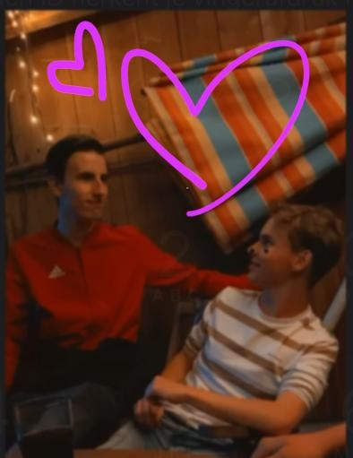

Lisan en Aron zijn op date geweest 💞
Naar de McDonalds en ze hebben daar 3 uur gezeten, wie weet is er wel meer gebeurd dan alleen praten 😱
Ze zijn allebei verliefd op elkaar. Dus we verwachten dat ze snel gaan krijgen.
Tim is verliefd op Walijne 💓
Hij heeft haar ook op date gevraagd.
Nu gaan ze op date, hij wou haar ook zoenen op Walijne haar verjaardagsfeestje. Maar Walijne deed afstandelijk.
Lotte en Jasmijn zijn zielig 😥
Wij met zijn tweeën zijn helemaal besties met 8 andere mensen van de scouting.
En toen bedachten de leidings van de scouting dat het tijd was om mensen naar de andere groep te doen, omdat ze te oud werden.
Dus gingen 6 besties van de groep weg naar de volgende groep.
Toen waren Lotte en ik helemaal sad want wij gingen niet mee.
Maar dit is eigenlijk vet oneerlijk want Bram(jongste van de 6) is maar 2 maanden ouder dan Lotte.
Eigenlijk snappen we wel waarom we achter zijn gebleven.
Want wij zijn natuurlijk de allerleukste personen ooit.
Merijn en Tim zijn een stel?!!??? 😨 😨
Bijna iedereen van de 10 besties denkt dat Merijn gay is (is niet echt zo).
Hij probeert het net iets te hard te ontkennen dat iedereen het grappig vindt om hem te pesten.
En Tim boeit niet wat mensen van hem denken, maar Merijn wel.
Dus Tim die knuffelt Merijn helemaal leuk, en zegt allemaal leuke dingen.
Van een hele super betrouwbare bron hebben wij dus ook gehoord dat hun gezoend hebben en verkering hebben wooow.
Hieronder staat een super cute foto van hun 2.
Struggle je net zoals Merijn met je sexualiteit dan kan deze pagina je misschien helpen.
